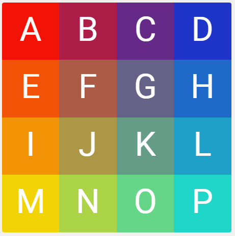

Loopover is like a 2D version of a Rubik's cube (you can play it here or here).

One interesting problem is to find what the largest number of moves would be if every scramble of a NxN Loopover is solved as efficiently as possible. This is called the God's number.
I, and other people on the internet, have been working on this problem for over a year
(my code (on my other account)).
Currently, we know that God's number for 4x4 is between 18 and 22.